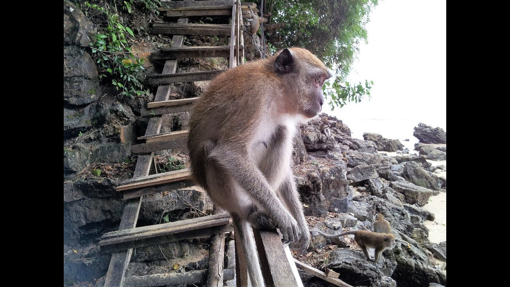

MONKEY TRAIL
The furry animals are rather friendly and are fun to spend time with. Some locals stop by the pathway daily to feed the monkeys and if you want to, you can feed the monkeys too. If you love animals , a walk here will be memorable for sure. Don’t forget to carry your camera to capture the moments!
Monkey Trail Travel Tips:
- Be aware of your belongings including wallets and cell phones when you walk through the trail.
WHERE WILL YOU FIND THEM
The monkey trail is just after the south of the lost forest